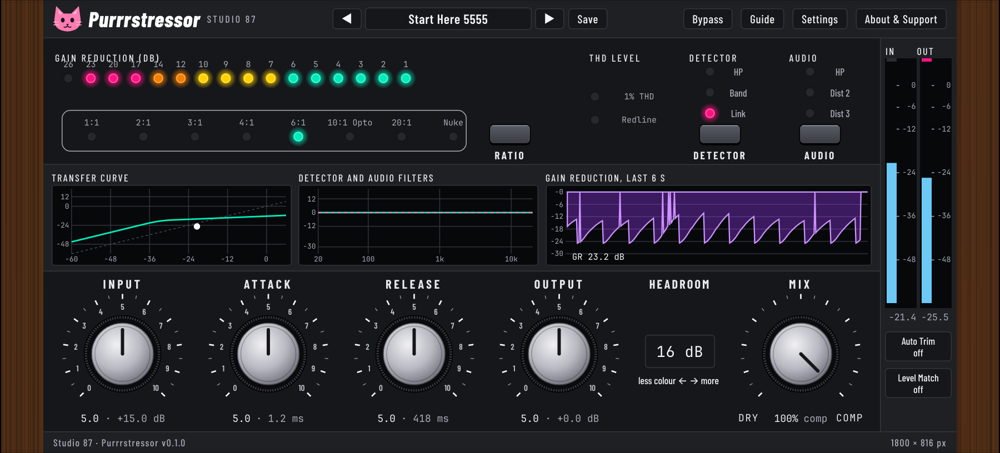

Purrrstressor
A free, open source, cat-themed compressor (VST3) in the style of a classic hardware compressor. Our own DSP, written from the public manuals. Studio 87.

The real plugin window, rendered offscreen by the build tools.
Not affiliated with or endorsed by Empirical Labs or Universal Audio. Collects nothing, never uses the network.